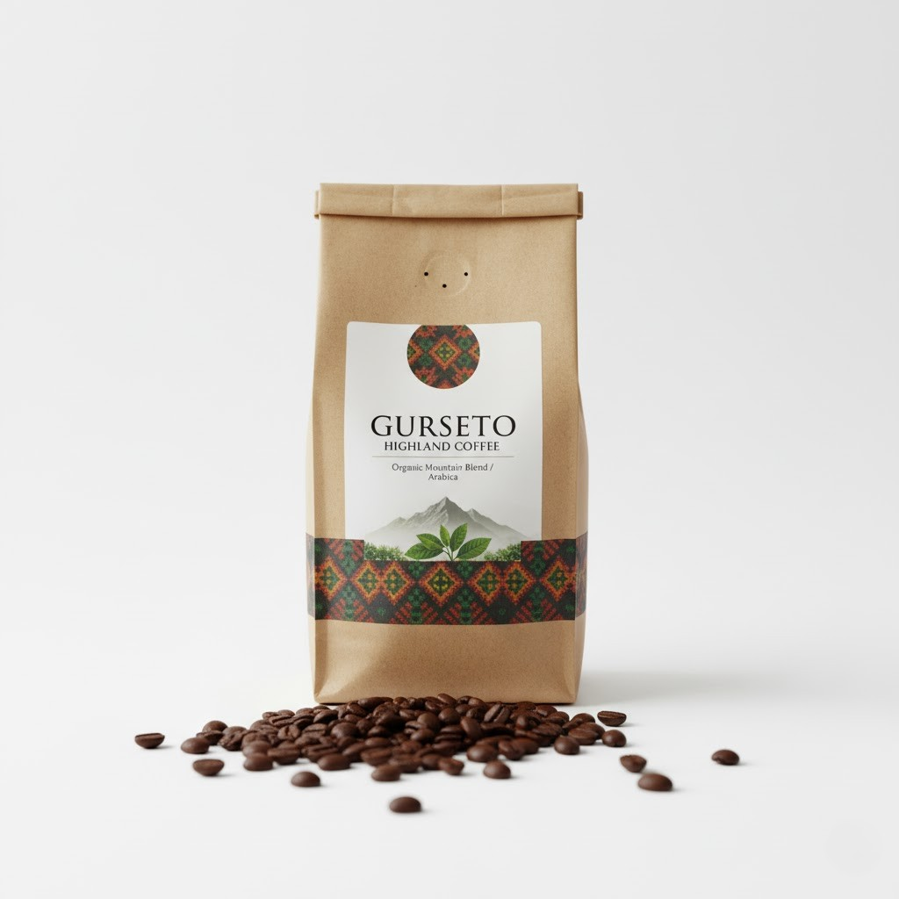
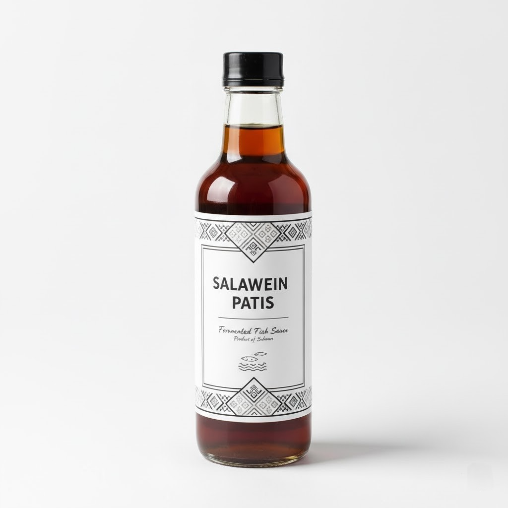

Gurseto Highland Coffee
雲を纏う山々の恵み
コーヒー豆が育つ山々は、サルウィン族が古くから暮らす聖なる土地。彼らの伝統的な知恵と、新しい栽培技術を融合させました。パッケージには、サルウィン族の伝統的な織物の文様を取り入れています。
品種と特徴:
- 品種: 標高の高い丘陵地帯で栽培されるアラビカ種。
- 特徴: 昼夜の寒暖差が大きい山岳地帯で育つため、引き締まった酸味とナッツのような深みのある香りを持つ「オーガニック・マウンテン・ブレンド」。
- 農法: 環境に配慮したシェードグロウン（日陰栽培）を採用。
ターゲット市場:
- 日本、欧米などのスペシャルティコーヒー市場。
- サステナビリティ（持続可能性）に関心の高い消費者層。

Salween Patis / Andaman Sauce
三つの海の交差点、「食の魂」
ベンガル系、ビルマ系、タガログ系といった多様な食文化が交わる海岸線で生まれた、「サルウィンの食の魂」。長い熟成期間が生み出す、深みのある旨味が特徴です。
原料と製法:
- 原料: ベンガル湾（アンダマン海）で獲れる新鮮な小魚（アンチョビなど）。
- 製法: 昔ながらの木樽で、塩漬けにした魚を1年以上かけて自然発酵・熟成。
- 特徴: まろやかな旨味と洗練された香りが特徴。
用途の多様性:
- 炒め物や煮込み料理の味付けに。
- 和食の隠し味や、オリジナルドレッシングのベースにも使える万能調味料。
ターゲット市場:
- 東南アジアの各国（調味料として）。
- 本格的な調味料を求める、世界中のエスニック料理愛好家。
✉ お問い合わせ
商品に関するご質問、卸売のご相談など、お気軽にお問い合わせください。
E-mail: this is fiction